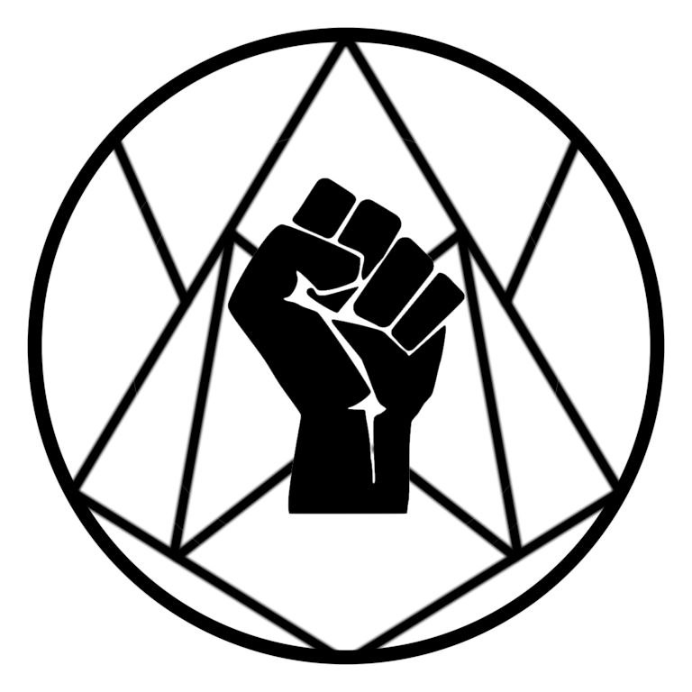

Общее описание
P.T.S. - научно-производственный комплекс, занимающийся разработкой новых ОМП.
Логотип

Основные направления
- Разработка ОМП
- Поведенческое моделирование
- Интеграция ОМП в общество другой страны
Связь с армией
P.T.S. работает напрямую с армией, взаимодействией с гражданским сектором сильно ограничено.